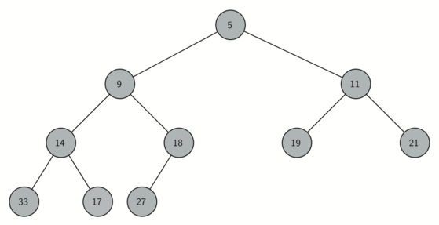

Árboles
Los arboles se definen como una estructura no lineal y dinámica en la que cada uno de sus nodos puede apuntar a un nodo o a varios, al igual que también se puede definir como una estructura compuesta por un dato y varios árboles.
Esta estructura no es lineal puesto que tiene un sucesor o un predecesor, una de sus propiedades que se considera tener son los arboles balanceados que en este caso son la estructura mas eficiente para trabajar con la memoria principal del procesador.
Un árbol en el que en cada nodo o bien todos o ninguno de los hijos existe, se llama árbol completo.
Una cosa de los arboles es que cualquier nodo puede ser el nodo raíz y se puede considerar una estructura independiente.
Existen conceptos sobre las características que definen el árbol las cuales son:
- Orden: Es el número potencial de hijos que puede tener cada elemento del árbol.
- Grado: es el número de hijos que tiene el elemento con más hijos dentro del árbol.
- Nivel: se define para cada elemento del árbol como la distancia a la raíz, medida en nodos.
- Altura: la altura de un árbol se define como el nivel del nodo de mayor nivel.
Para poder navegar con mas facilidad dentro del árbol se puede agregar un puntero a cada nodo y que apunte al nodo raíz, ya que de esta forma se puede avanzar hacia las hojas y hacia el nodo raíz.
Es importante conservar el nodo raíz ya que este nodo es el desde donde se desarrolla el árbol, si se pierde este nodo se pierde el acceso a todo el árbol.
Ejemplo para crear un árbol de orden 3.
struct nodo {
int dato;
struct nodo *rama1;
struct nodo *rama2;
struct nodo *rama3;
}
-
OPERACIONES CON ARBOLES:
- Agregar o insertar elementos.
- Buscar o localizar elementos.
- Borrar elementos.
- Moverse a través del árbol.
- Recorrer el árbol completo.

Recorridos de arboles
Uno de los modos de moverse es a través de las ramas de un árbol siguiendo los punteros, del mismo modo en que se puede mover en las listas.
Para poder recorrer el árbol depende mucho del tipo y propósito del árbol, pero existen recorridos que se usaran frecuentemente, estos recorridos incluyen todo el árbol.
Existen tres formas de recorrer el árbol, lo que diferencia a cada uno de los recorridos es el momento en que elegimos para procesar el valor de cada nodo con relación de un nodo a otro.
- Pre-orden
En este tipo de recorrido, el valor del nodo se procesa antes de recorrer las ramas.
void PreOrden(Arbol a) {
if(a == NULO) return;
Procesar(dato);
RecorrerArbol(a.rama[0]);
RecorrerArbol(a.rama[1]);
RecorrerArbol(a.rama[2]);
}
- In-orden
En este tipo de recorrido, el valor del nodo se procesa después de recorrer la primera rama y antes de recorrer la última. Esto tiene más sentido en el caso de árboles binarios, y también cuando existen ORDEN-1 datos, en cuyo caso procesaremos cada dato entre el recorrido de cada dos ramas (este es el caso de los árboles-b).
void InOrden(Arbol a) {
if(a == NULO) return;
RecorrerArbol(a.rama[0]);
Procesar(dato);
RecorrerArbol(a.rama[1]);
RecorrerArbol(a.rama[2]);
}
- Post orden
En este tipo de recorrido, el valor del nodo se procesa después de recorrer todas las ramas.
void PostOrden(Arbol a) {
if(a == NULO) return;
RecorrerArbol(a.rama[0]);
RecorrerArbol(a.rama[1]);
RecorrerArbol(a.rama[2]);
Procesar(dato);
}
Arboles binarios
Este tipo de árbol es de orden 2 en los que se cumplen para cada nodo, El valor clave de la raíz del subárbol izquierdo es menor que el valor de la clave del nodo y que el valor de la clave raíz del subárbol derecho es mayor que el valor de la clave del nodo.
-
OPERACIONES DE ARBOLES BINARIOS:
- Buscar un elemento.
- Insertar un elemento.
- Borrar un elemento.
- Izquierda.
- Derecha.
- Raíz.
- Comprobar si un árbol está vacío.
- Calcular el número de nodos.
- Comprobar si el nodo es hoja.
- Calcular la altura de un nodo.
- Calcular la altura de un árbol.
-
Movimientos a través del árbol:
-
Información:

Moquer Company v0.1